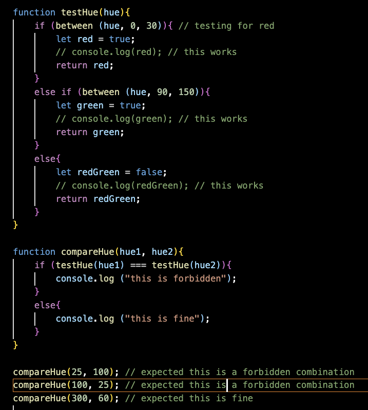

✒ Week 10
♦ Project Title: Charteruse
This title is a play on words from the colour Chartreuse. I thought it was interesting since it's one of the only colours I know with the word chart in it!
This project is going to be a colour generator for charts.
♦ What does the Colour Generator do?
A colour generator helps people develop colour palettes for their charts by giving them a starting point.
To reach this goal, there are 3 steps:
1. The Starting Point: this can be created by generating random colours for the palette.
2. Tweaking: for the palette to reach the next stage of being "developed" instead of just "generated", the palette should be editable too.
3. Exporting: for the palette to be used elsewhere, the option to copy paste colour codes or export an image to be colour-dropped should be made available.
Throughout the process, chart previews should be made available so that the user can judge if they like the palettes. An inspiration I found is a tool called Viz Palette. I really like the layout they use and I might tweak my current layout to suit something like that.
So, instead of having radio buttons to switch between charts, I'd have a div with smaller canvas within to display different types of charts. Oh and, I will be using Bootstrap to help me with all the alignment pains, but I will be making the CSS & any other design assets or choices myself. Except the svg icons, those will be sourced online.
♦ What are the "rules" of this generator?
For a palette to be useful for a data visualisation, it should have sufficient contrast so that readers can distinguish the different lines or pie segments from each other.
After doing some reading, I found this article which talked about the different types of palettes: qualitative, sequential and diverging. I think the palette that this project would suit best is qualitative palettes.
As such, I think the most important "rule" this generator must incorporate is generating random colours that do not overlap.
In week 8 I mentioned that I might not understand the maths behind generating pleasing palettes, but after some Googling, I found this StackOverflow thread about generating pleasing/contrasting colour palettes. The responses offer many ideas and I'm interested in trying out the Golden Angle solution.
The Golden Angle, which is around 137˚, involves looking at the HSL values of colours and treating hue as an angle. This Medium article was very informative in helping me understand it. When we treat Hue as an angle, it means looking at colour in terms of a colour wheel where red is at 0˚.
I sketched this image to help me understand the math and also to help me work out my thoughts in writing.
Going by colour theory, the two sets of complementary colours are:
1. red, green, blue (indicated by squares)
2. purple, yellow, teal (indicated by triangles)
By starting at 0˚, we get a shade of red. Then, increasing the angle by 137˚ will bring us to green. Repeating this brings us to blue. The same logic of skipping a segment of the colour wheel to reach a contrasting colour by rotating 137˚ can be applied to any other starting point.
However, in order to make the palette accessible, some combinations have to be avoided, such as red and green. This article has a list of combinations to avoid, and I will be referring to it later on in the coding.
If I want the generator to avoid certain combination, I can try getting it to select two base hues that the palette is based on, then comparing the base hues to see if they form any of the inaccessible combinations.
1. Select Hue 1
2. Select Hue 2
3. Conduct a series of tests that might look something like this: If Hue1 = red && Hue2 = green, regenerate Hue2
4. Generate the other colours of the palette by varying saturation & lightness
Even then, I think additional tests have to be slotted in to ensure that the saturation & lightness values are properly contrasting. I'm a very visual person, so I think instead of guessing the numbers, I will try coding this first and see what kind of results I get haha.
UPDATE: trying to code the formula
I have returned alive from my attempt! This week, I tried working on a bunch of things including fixing some styling issues. If I write about everything though, this post is going to be ridiculously long so I will focus on the problems that left a lasting (and frustrating) impression.
There are quite a few things to cover, but let's start with my thought process for how the colour generation process should be structured. This was my plan:
1. Randomly generate Hue 1
2. Randomly generate Hue 2
3. Test if Hue 1 & Hue 2 are a combination of red & green
4. If not, proceed with generating saturation & brightness values of the colours
5. Change what needs to be changed (swatch backgrounds, labels, graph)
I started by building smaller, basic mathematical functions that I knew I would call repeatedly e.g. random(min, max) to generate a random value.
1 & 2. Getting the baseHues down
I wanted two hue values that would form the base of the other colours after it (1 more colour for hue1 and 2 more colours for hue2).
baseHue was basically document.getElementsByClassName("baseHue"). However, the function was only returning me one value though, when it should return two since there are two div elements with class baseHue. I checked the line where I getElementsByClassName and yes, two divs show up. I realised it was the return statement that broke the loop, so I removed it. However, now I started getting 5 values, which was weird to me.
I decided to try another approach by using forEach, but it gave the error baseHue.forEach is not a function. After some googling, I realised that error indicated that baseHue was likely not being treated as an array or array-like object. So I used Array.from to wrap the document.getElementsByClassName. I had learned this technique previously from the Extra Practice where I tried changing the backgrounds of several divs with the same class name. Using this with for...in worked.
But now I had a problem. I was writing small functions one at a time because I did not want my final function, changeColour(), to be super long. At the time of my first attempt, the function was so long because I was trying not to use global variables but also needed a lot of values to be used in mathematics and .innerHTML magic. As a result, I had to cram all the variables I needed into one function so they could be accessed.
And then I remembered the recent lessons about creating empty arrays and using .push. So I made a new empty array called baseHueArray where I will push the newly generated hue values.
3. Testing the hues for red-green combination – writing testHue()
After that, I moved on to write the function testHue() for comparing the 2 basic hues to check if they were a combination of red and green. I used preset values while testing the function instead of linking it to baseHueGen() because I wanted to make sure the logic in testHue() was correct.

Of course, things didn't go as planned.

A quick search then revealed that I should use else if for the second part of the if statement. It continued to return the statement "this is a forbidden condition" though.
I then realised that you can’t use 0 <= hue1 < 30 to get js to test for a range. It has to be broken up into 0 <= hue1 && hue1 < 30. You can’t test hue1 and hue2 together in one statement either. So I decided to make use of boolean values:
And repeat this same process if hue1 & hue2 are swapped. This was my next version of the function:

But it persisted in giving me "this is forbidden". I did some console.logging and then realised that if both testHue() returned false, then it also fulfills the condition testHue(hue1) == testHue(hue2) which is why it was returning me "this is forbidden" when it shouldn't. I then changed the condition to (testHue(hue1) == true && testHue(hue2) == true) to test for both returning true at the same time, which worked!
4. Loop to test & reset (compareHue())
I wanted the loop to test if compareHue() was true (i.e., there was a redGreen combination); to repeat the random generation if it was; to stop if it wasn’t. I tried recursion and it was pretty scary haha!
I realised from the console.log that the first few values were always the same. That made me realise that I had to break the recursion. To do that, I would have to clear the baseHueArray everytime baseHueGen() is called, otherwise, the initial 2 incompatible hues are going to stay in their position with new hues added to the ends. To clear the baseHueArray, I set baseHueArray.length = 0; (source) at the beginning of baseHueGen(). It worked.
Then I remembered I was supposed to use the golden angle for contrasting colours, which means I should work with just 1 base hue and then apply maths to it. See, this is what happens when you don’t plan enough ;; In any case, it wasn’t hard to fix, I just had to remove the for loop and add a couple of lines.
The circleBack function was written to make the value not exceed 360.
5. generating S & B values then putting together the HSBstrings()
When making the HSBstrings() function, I initially placed HSBstringsArray.length = 0; in the first line for that function. However, I realised that this clears the values I have generated for hue1 if my call stack is like this:
So I moved the line to the top of changeColour() so that the array only clears when the button is pressed, and not each time HSBstrings is called.
6. the... end?
Nope! Prof/TAs, you've probably seen my mistake from a mile away HAHA
When I finally coded everything, the button wouldn’t work! I used console.log to try and debug each function, try to see where the values were being pushed wrongly etc. Strangely enough, the strings were generated and all, but the colours weren't changing.
I figured there was something wrong with what I was replacing the CSS with, so I googled how to write HSB values into CSS. That was when I realised you can’t use HSB in CSS, so I changed everything to HSL instead. I also realised I have to add the % sign behind the saturation and lightness values for the HSLstrings() (formerly HSBstrings()), so I put them in.
And finally the basic function worked. When I pressed the button, the colours of the swatches would change to match the generated HSLstring().
Extras
After getting the basic flow to work, I tried to work on adding more conditions to what kind of values would be generated so that the colour palette would:
1. contrast within itself: means that the L values have to be spaced out from each other
2. contrast with the background depending on whether it was light or dark: means the changeColour() has to detect whether the user has opted for a dark or light background
This entry is very long at this point, so I think I will leave it to the next entry or to put in the final write-up only. They're still being worked on.
♦ What can the user do?
This partially overlaps with my answer to the first question. I will break down the available user actions for each step.
1. Starting Point: generating colours
• press a button to generate random colours
2. Tweaking
• editing swatches directly (either through entering another hex value or maybe I can somehow insert a colour wheel)
• locking colours they like so that those colours don't change while the rest do. I am suddenly uncomfortably aware that this might mess up my colour-blind tests but I shall cross that bridge when I get to it heh
3. Exporting
• clicking on a swatch to copy the hex code
• clicking a button to download a screenshot of the canvas (read somewhere that canvas.toBlob might work, but I have yet to try it so who knows, it might and probably will go wrong)
♦ What does the program do for each user action?
In this section, I will list the user action followed by bullet point(s) on what the program will do.
1. press a button to generate random colours
1.1 there must be an eventListener for that button
1.2 there must be function(s) that will be activated when the button is pressed
1.3 these functions must activate random colour generation and put those colours through the combination tests
1.4 these values must then be looped through the array of swatch divs and also the objects in the dataset to change the colours of the swatches and the graph
2. editing swatches directly
2.1 the swatches colourLabel must be able to take input, therefore I think it should have the input tag
2.2 the page must be able to detect when this new input is sent to it and...
2.3 ... reassign the corresponding variable to that new input
3. locking colours they like
3.1 there must be a button to press
3.2 when this button is pressed, it should activate a "locked" state for the variable
3.3 this locked state should be detectable. To do this, perhaps an icon for "locked" and "unlocked" could be used for the button. The state is "understood" by the js through testing which image the lock button is using?
3.4 the function should be instructed to skip generating a new colour for locked swatches. I think this entails adding an if statement in the loop before the new values are calculated.
4. clicking on a swatch to copy the hex code
4.1 to use clipboardJS, I need to use this bit of code: var clipboard = new ClipboardJS(".copyBtn")
4.2 a data-clipboard-label has to be assigned to each swatch div element with a unique id
4.3 use the function provided in the clipboardjs documentation for it to work (sorry I don't have a detailed explanation on how this works right now, still trying to understand!)
5. clicking a button to download a screenshot of the canvas
I still haven't explored this much yet, so I'm not sure. I will write down what I think I need though!
5.1 a download button that activates a function Download when pressed
5.2 the browser needs to know which div to target when Download is called, so the div with all the canvases should have a unique id
5.3 somehow convert that target into an image that is saved into the computer
♦ When does the generator end?
Whenever the user likes or when GitHub falls
Tasks I Have Left (in order of priority)
• clean up the additional features I put in this week (locking colours, dark mode light mode, copy button)
• figure out the download function
• make a copy all button maybe?
• colour change transition animation for the swatches and stuff... it's so abrupt right now
• add more chart types
• figure out how to give user feedback when copied successfully (basically stare harder at the clipboardJS documentation zzz)
• figure out my svg icons for buttons
• styling
Sorry for the long post, I made a lot of mistakes this week and wanted to document them hehe ^^"".